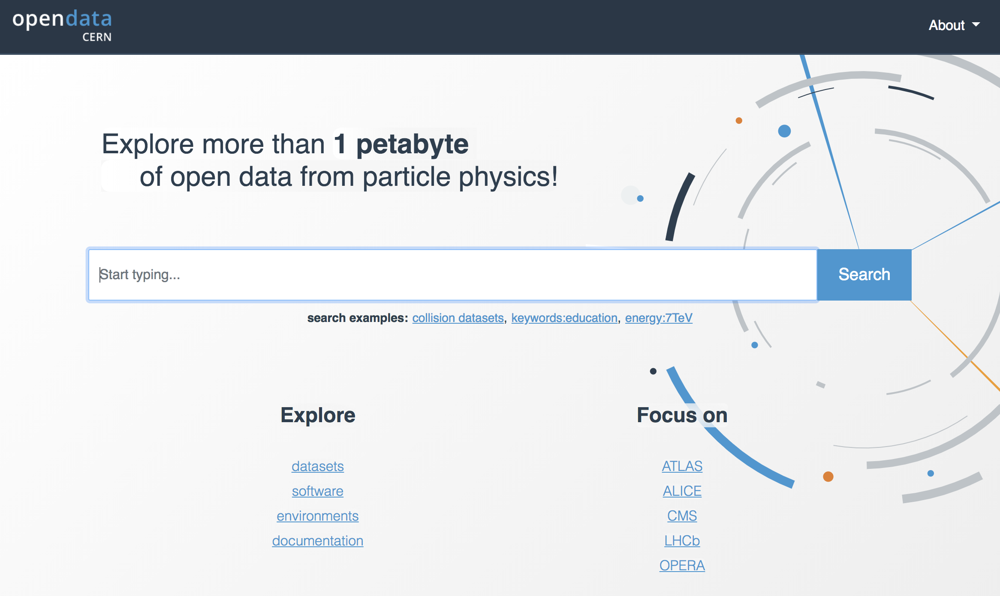

Outreach Highlights
CERN's Web@30 Event
Organising Committe: Celebrating 30 years since Sir Tim's proposal for the World Wide Web
British Science Museum's Web@30 Events
CERN representative at Web@30 celebration and at Royal demonstration of CERN's NeXT cube, the world's first web server
Future Forward, Science in the Open Era, 2019
Inaugural Lecture in TUDelft series
LaReferencia signature with Zenodo, 2018

CERN Representative
OpenScience Summit Istanbul, 2018
Presentation
Open Science as a Common Good, European Parliament, 2017
Lecture at Conference to brief MEPs
TEDxChamonix, 2017
Presenter
Zenodo launched, 2015

Mentor and responsible for the team
Launched CERN's Open Data Portal, 2014

Mentor and responsibible for the team
The first TEDxCERN, 2013
Organising Committee
TEDEd Animation, 2013
Script and Voice
CERN releases photos under Creative Commons licence, 2013
Lead the Policy Task force. First IGO to do so
CERN's Higgs Seminar, 2012

Organising Committe and responsible for Webcast to the world and AV infrastructure. Biggest scientific event to date; webcast 1 million, TV coverage 1 billion
Inauguration of the LHC, 2008
Organising Committee
 Orcid
Orcid